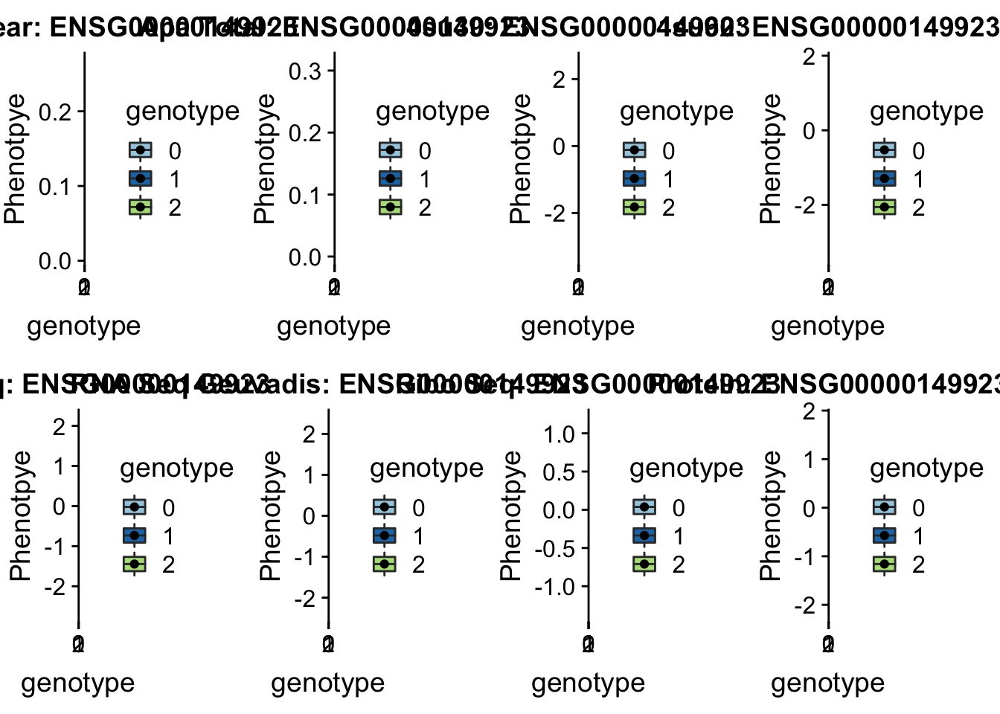
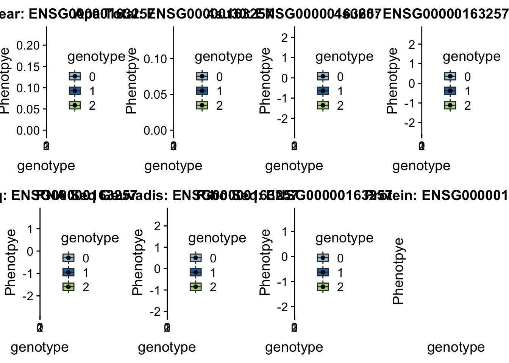

Last updated: 2018-11-12
workflowr checks: (Click a bullet for more information) ✔ R Markdown file: up-to-date
Great! Since the R Markdown file has been committed to the Git repository, you know the exact version of the code that produced these results.
✔ Environment: empty
Great job! The global environment was empty. Objects defined in the global environment can affect the analysis in your R Markdown file in unknown ways. For reproduciblity it’s best to always run the code in an empty environment.
✔ Seed:
set.seed(12345)
The command set.seed(12345) was run prior to running the code in the R Markdown file. Setting a seed ensures that any results that rely on randomness, e.g. subsampling or permutations, are reproducible.
✔ Session information: recorded
Great job! Recording the operating system, R version, and package versions is critical for reproducibility.
✔ Repository version: 89b780f
wflow_publish or wflow_git_commit). workflowr only checks the R Markdown file, but you know if there are other scripts or data files that it depends on. Below is the status of the Git repository when the results were generated:
Ignored files:
Ignored: .DS_Store
Ignored: .Rhistory
Ignored: .Rproj.user/
Ignored: data/.DS_Store
Ignored: output/.DS_Store
Untracked files:
Untracked: KalistoAbundance18486.txt
Untracked: analysis/ncbiRefSeq_sm.sort.mRNA.bed
Untracked: analysis/snake.config.notes.Rmd
Untracked: analysis/verifyBAM.Rmd
Untracked: data/18486.genecov.txt
Untracked: data/APApeaksYL.total.inbrain.bed
Untracked: data/ChromHmmOverlap/
Untracked: data/GM12878.chromHMM.bed
Untracked: data/GM12878.chromHMM.txt
Untracked: data/NuclearApaQTLs.txt
Untracked: data/PeaksUsed/
Untracked: data/RNAkalisto/
Untracked: data/TotalApaQTLs.txt
Untracked: data/Totalpeaks_filtered_clean.bed
Untracked: data/YL-SP-18486-T-combined-genecov.txt
Untracked: data/YL-SP-18486-T_S9_R1_001-genecov.txt
Untracked: data/apaExamp/
Untracked: data/bedgraph_peaks/
Untracked: data/bin200.5.T.nuccov.bed
Untracked: data/bin200.Anuccov.bed
Untracked: data/bin200.nuccov.bed
Untracked: data/clean_peaks/
Untracked: data/comb_map_stats.csv
Untracked: data/comb_map_stats.xlsx
Untracked: data/comb_map_stats_39ind.csv
Untracked: data/combined_reads_mapped_three_prime_seq.csv
Untracked: data/diff_iso_trans/
Untracked: data/ensemble_to_genename.txt
Untracked: data/example_gene_peakQuant/
Untracked: data/filtered_APApeaks_merged_allchrom_refseqTrans.closest2End.bed
Untracked: data/filtered_APApeaks_merged_allchrom_refseqTrans.closest2End.noties.bed
Untracked: data/first50lines_closest.txt
Untracked: data/gencov.test.csv
Untracked: data/gencov.test.txt
Untracked: data/gencov_zero.test.csv
Untracked: data/gencov_zero.test.txt
Untracked: data/gene_cov/
Untracked: data/joined
Untracked: data/leafcutter/
Untracked: data/merged_combined_YL-SP-threeprimeseq.bg
Untracked: data/mol_overlap/
Untracked: data/mol_pheno/
Untracked: data/nom_QTL/
Untracked: data/nom_QTL_opp/
Untracked: data/nom_QTL_trans/
Untracked: data/nuc6up/
Untracked: data/other_qtls/
Untracked: data/peakPerRefSeqGene/
Untracked: data/perm_QTL/
Untracked: data/perm_QTL_opp/
Untracked: data/perm_QTL_trans/
Untracked: data/reads_mapped_three_prime_seq.csv
Untracked: data/smash.cov.results.bed
Untracked: data/smash.cov.results.csv
Untracked: data/smash.cov.results.txt
Untracked: data/smash_testregion/
Untracked: data/ssFC200.cov.bed
Untracked: data/temp.file1
Untracked: data/temp.file2
Untracked: data/temp.gencov.test.txt
Untracked: data/temp.gencov_zero.test.txt
Untracked: output/picard/
Untracked: output/plots/
Untracked: output/qual.fig2.pdf
Unstaged changes:
Modified: analysis/28ind.peak.explore.Rmd
Modified: analysis/39indQC.Rmd
Modified: analysis/chromHmm_enrichment.Rmd
Modified: analysis/cleanupdtseq.internalpriming.Rmd
Modified: analysis/coloc_apaQTLs_protQTLs.Rmd
Modified: analysis/dif.iso.usage.leafcutter.Rmd
Modified: analysis/diff_iso_pipeline.Rmd
Modified: analysis/explore.filters.Rmd
Modified: analysis/flash2mash.Rmd
Modified: analysis/overlapMolQTL.Rmd
Modified: analysis/overlap_qtls.Rmd
Modified: analysis/peakOverlap_oppstrand.Rmd
Modified: analysis/pheno.leaf.comb.Rmd
Modified: analysis/swarmPlots_QTLs.Rmd
Modified: analysis/test.max2.Rmd
Modified: code/Snakefile
| File | Version | Author | Date | Message |
|---|---|---|---|---|
| Rmd | 89b780f | Briana Mittleman | 2018-11-12 | add analysis of hits |
| html | 7462a2d | Briana Mittleman | 2018-11-09 | Build site. |
| Rmd | 489bf91 | Briana Mittleman | 2018-11-09 | code for plink r2 |
| html | 0428c8c | Briana Mittleman | 2018-10-29 | Build site. |
| Rmd | 42d0e3d | Briana Mittleman | 2018-10-29 | add gwas overlap to index |
library(workflowr)This is workflowr version 1.1.1
Run ?workflowr for help getting startedlibrary(tidyverse)── Attaching packages ─────────────────────────────────────────────────────────────────────────── tidyverse 1.2.1 ──✔ ggplot2 3.0.0 ✔ purrr 0.2.5
✔ tibble 1.4.2 ✔ dplyr 0.7.6
✔ tidyr 0.8.1 ✔ stringr 1.3.1
✔ readr 1.1.1 ✔ forcats 0.3.0── Conflicts ────────────────────────────────────────────────────────────────────────────── tidyverse_conflicts() ──
✖ dplyr::filter() masks stats::filter()
✖ dplyr::lag() masks stats::lag()library(cowplot)
Attaching package: 'cowplot'The following object is masked from 'package:ggplot2':
ggsaveIn this analysis I want to see if APAqtls show up in the GWAS catelog. I then want to see if they explain different signal then overlappnig the eQTLs.
I can use my significant snp bed file from /project2/gilad/briana/threeprimeseq/data/perm_APAqtl_trans/sigSnps to overlap with the GWAS catelog. First I can look at direct location then I will use an LD cutoff to colocalize.
The downloaded GWAS catalog from the UCSD table browser.
I will make this into a bed format to use with pybedtools.
-Chrom -start -end -name -score
fin=open(""/project2/gilad/briana/genome_anotation_data/hg19GwasCatalog.txt", "r")
fout=open("/project2/gilad/briana/genome_anotation_data/hg19GwasCatalog.bed","w")
for num, ln in enumerate(fin):
if num > 0:
line=ln.split("\t")
id_list=[line[4],line[5], line[14]]
start=int(line[2])
end=int(line[3])
id=":".join(id_list)
chr=line[1][3:]
pval=line[16]
fout.write("%s\t%d\t%d\t%s\t%s\n"%(chr,start, end, id, pval)
fout.close()
Pybedtools to intersect my snps with catelog /project2/gilad/briana/threeprimeseq/data/GWAS_overlap
output dir:
import pybedtools
gwas=pybedtools.BedTool("/project2/gilad/briana/genome_anotation_data/hg19GwasCatalog.sort.bed")
nuc=pybedtools.BedTool("/project2/gilad/briana/threeprimeseq/data/perm_APAqtl_trans/sigSnps/ApaQTLsignificantSnps_10percFDR_Nuclear.sort.bed")
tot=pybedtools.BedTool("/project2/gilad/briana/threeprimeseq/data/perm_APAqtl_trans/sigSnps/ApaQTLsignificantSnps_10percFDR_Total.sort.bed")
nucOverGWAS=nuc.intersect(gwas, wa=True,wb=True)
totOverGWAS=tot.intersect(gwas,wa=True, wb=True)
#this only results in one overlap:
nucOverGWAS.saveas("/project2/gilad/briana/threeprimeseq/data/GWAS_overlap/nucFDR10overlapGWAS.txt")
Problem: I see this snp but it is assoicated with a different gene. I need to think about gene and snp overlap.
I can see if this snp is an eqtl.
16:30482494
eqtl=read.table(file = "../data/other_qtls/fastqtl_qqnorm_RNAseq_phase2.fixed.perm.out")
eqtl_g= read.table("../data/other_qtls/fastqtl_qqnorm_RNAseqGeuvadis.fixed.perm.out")This snp is not in either of these files. I will check for them in the nominal results.
grep 16:30482494 /project2/gilad/briana/threeprimeseq/data/molecular_QTLs/nom/fastqtl_qqnorm_RNAseq_phase2.fixed.nominal.out
grep 16:30482494 /project2/gilad/briana/threeprimeseq/data/molecular_QTLs/nom/fastqtl_qqnorm_RNAseqGeuvadis.fixed.nominal.out
https://vcftools.github.io/man_latest.html –vcf (vcf file) –geno-r2 –out (prefix) vcf tools is on midway 2 “module load vcftools”
I can use the snp files I created for the chromHMM analysis.
I can use awk to get the first and third column.
awk '{print $1 ":" $3}' /project2/gilad/briana/threeprimeseq/data/perm_APAqtl_trans/sigSnps/ApaQTLsignificantSnps_10percFDR_Nuclear.sort.bed > /project2/gilad/briana/threeprimeseq/data/GWAS_overlap/ApaQTLsigSNPpos_Nuclear.txt
awk '{print $1":"$3}' /project2/gilad/briana/threeprimeseq/data/perm_APAqtl_trans/sigSnps/ApaQTLsignificantSnps_10percFDR_Total.sort.bed > /project2/gilad/briana/threeprimeseq/data/GWAS_overlap/ApaQTLsigSNPpos_Total.txttestLD_vcftools_totQTL.sh
#!/bin/bash
#SBATCH --job-name=testLD_vcftools_totQTL.sh
#SBATCH --account=pi-yangili1
#SBATCH --time=36:00:00
#SBATCH --output=testLD_vcftools_totQTL.out
#SBATCH --error=testLD_vcftools_totQTL.err
#SBATCH --partition=broadwl
#SBATCH --mem=16G
#SBATCH --mail-type=END
module load vcftools
vcftools --gzvcf chr1.dose.vcf.gz --snps /project2/gilad/briana/threeprimeseq/data/GWAS_overlap/ApaQTLsigSNPpos_Total.txt --out /project2/gilad/briana/YRI_geno_hg19/chr1.totQTL.LD --geno-r2 /project2/gilad/briana/threeprimeseq/data/GWAS_overlap/TotalApaQTL_LD
/project2/gilad/briana/threeprimeseq/data/GWAS_overlap/NuclearApaQTL_LD
Now run this for all chr in both fractions.
LD_vcftools.sh
#!/bin/bash
#SBATCH --job-name=LD_vcftools.sh
#SBATCH --account=pi-yangili1
#SBATCH --time=36:00:00
#SBATCH --output=LD_vcftools.out
#SBATCH --error=rLD_vcftools.err
#SBATCH --partition=broadwl
#SBATCH --mem=30G
#SBATCH --mail-type=END
module load vcftools
for i in {1..22};
do
vcftools --gzvcf /project2/gilad/briana/YRI_geno_hg19/chr${i}.dose.vcf.gz --snps /project2/gilad/briana/threeprimeseq/data/GWAS_overlap/ApaQTLsigSNPpos_Total.txt --out /project2/gilad/briana/threeprimeseq/data/GWAS_overlap/TotalApaQTL_LD/chr${i}.totQTL.LD --geno-r2 --min-r2 .8
done
for i in {1..22};
do
vcftools --gzvcf /project2/gilad/briana/YRI_geno_hg19/chr${i}.dose.vcf.gz --snps /project2/gilad/briana/threeprimeseq/data/GWAS_overlap/ApaQTLsigSNPpos_Nuclear.txt --out /project2/gilad/briana/threeprimeseq/data/GWAS_overlap/NuclearApaQTL_LD/chr${i}.nucQTL.LD --geno-r2 --min-r2 .8
done
This doesnt give very many more snps. Let me try this with Tony’s vcf files from the larger panel of LCLs.
Try it with the –hap-r2 argument.
LD_vcftools.hap.sh
#!/bin/bash
#SBATCH --job-name=LD_vcftools.hap.sh
#SBATCH --account=pi-yangili1
#SBATCH --time=36:00:00
#SBATCH --output=LD_vcftools.hap.out
#SBATCH --error=rLD_vcftools.hap.err
#SBATCH --partition=broadwl
#SBATCH --mem=30G
#SBATCH --mail-type=END
module load vcftools
for i in {1..22};
do
vcftools --gzvcf /project2/gilad/briana/YRI_geno_hg19/chr${i}.dose.vcf.gz --snps /project2/gilad/briana/threeprimeseq/data/GWAS_overlap/ApaQTLsigSNPpos_Total.txt --out /project2/gilad/briana/threeprimeseq/data/GWAS_overlap/TotalApaQTL_LD/chr${i}.totQTL.hap.LD --hap-r2--min-r2 .8
done
for i in {1..22};
do
vcftools --gzvcf /project2/gilad/briana/YRI_geno_hg19/chr${i}.dose.vcf.gz --snps /project2/gilad/briana/threeprimeseq/data/GWAS_overlap/ApaQTLsigSNPpos_Nuclear.txt --out /project2/gilad/briana/threeprimeseq/data/GWAS_overlap/NuclearApaQTL_LD/chr${i}.nucQTL.hap.LD --hap-r2 --min-r2 .8
done
still not a lot of snps.
testLDGeu_vcftools_totQTL.sh
#!/bin/bash
#SBATCH --job-name=testLDGeu_vcftools_totQTL.sh
#SBATCH --account=pi-yangili1
#SBATCH --time=36:00:00
#SBATCH --output=testLDGeu_vcftools_totQTL.out
#SBATCH --error=testLDGeu_vcftools_totQTL.err
#SBATCH --partition=broadwl
#SBATCH --mem=16G
#SBATCH --mail-type=END
module load vcftools
vcftools --gzvcf /project2/yangili1/LCL/genotypesYRI.gen.txt.gz --snps /project2/gilad/briana/threeprimeseq/data/GWAS_overlap/ApaQTLsigSNPpos_Total.txt --out /project2/gilad/briana/threeprimeseq/data/GWAS_overlap/geuvadis.totQTL.LD --geno-r2 Error: Insufficient sites remained after filtering
vcf2Plink.sh
#!/bin/bash
#SBATCH --job-name=vcf2Plink
#SBATCH --account=pi-yangili1
#SBATCH --time=36:00:00
#SBATCH --output=vcf2Plink.out
#SBATCH --error=vcf2Plink.err
#SBATCH --partition=broadwl
#SBATCH --mem=30G
#SBATCH --mail-type=END
module load vcftools
for i in {1..22};
do
vcftools --gzvcf /project2/gilad/briana/YRI_geno_hg19/chr${i}.dose.vcf.gz --plink --chr ${i} --out /project2/gilad/briana/YRI_geno_hg19/plinkYRIgeno_chr${i}
doneTry with plink:
I will use the ped and map files: –ped /project2/gilad/briana/YRI_geno_hg19/plinkYRIgeno_chr$i.ped –map /project2/gilad/briana/YRI_geno_hg19/plinkYRIgeno_chri.map
–ld-snp-list /project2/gilad/briana/threeprimeseq/data/GWAS_overlap/ApaQTLsigSNPpos_Total.txt
–r2
–ld-window-r2 0.20.8 testPlink_r2.sh
#!/bin/bash
#SBATCH --job-name=testPlink_r2
#SBATCH --account=pi-yangili1
#SBATCH --time=36:00:00
#SBATCH --output=testPlink_r2.out
#SBATCH --error=testPlink_r2.err
#SBATCH --partition=broadwl
#SBATCH --mem=30G
#SBATCH --mail-type=END
module load plink
plink --ped /project2/gilad/briana/YRI_geno_hg19/plinkYRIgeno_chr22.ped --map /project2/gilad/briana/YRI_geno_hg19/plinkYRIgeno_chr22.map --r2 --ld-window-r2 0.8 --out /project2/gilad/briana/threeprimeseq/data/GWAS_overlap/plinkYRI_LDchr22
This gives me 77,000 pairs. I will run this on all of the chromosomes then subset by snps i have QTLs for.
RunPlink_r2.sh
#!/bin/bash
#SBATCH --job-name=RunPlink_r2
#SBATCH --account=pi-yangili1
#SBATCH --time=36:00:00
#SBATCH --output=RunPlink_r2.out
#SBATCH --error=RunPlink_r2.err
#SBATCH --partition=broadwl
#SBATCH --mem=30G
#SBATCH --mail-type=END
module load plink
for i in {1..22};
do
plink --ped /project2/gilad/briana/YRI_geno_hg19/plinkYRIgeno_chr${i}.ped --map /project2/gilad/briana/YRI_geno_hg19/plinkYRIgeno_chr${i}.map --r2 --ld-window-r2 0.8 --out /project2/gilad/briana/threeprimeseq/data/GWAS_overlap/plinkYRI_LDchr${i}
done
I can now subset these files for snps in the /project2/gilad/briana/threeprimeseq/data/GWAS_overlap/ApaQTLsigSNPpos_Total.txt and /project2/gilad/briana/threeprimeseq/data/GWAS_overlap/ApaQTLsigSNPpos_Nuclear.txt files using a python script.
This script will take a fraction and chromosome.
subset_plink4QTLs.py
def main(genFile, qtlFile, outFile):
#convert snp file to a list:
def file_to_list(file):
snp_list=[]
for ln in file:
snp=ln.strip()
snp_list.append(snp)
return(snp_list)
gen=open(genFile,"r")
fout=open(outFile, "w")
qtls=open(qtlFile, "r")
qtl_list=file_to_list(qtls)
for ln in gen:
snp=ln.split()[2]
if snp in qtl_list:
fout.write(ln)
fout.close()
if __name__ == "__main__":
import sys
chrom=sys.argv[1]
fraction=sys.argv[2]
genFile = "/project2/gilad/briana/threeprimeseq/data/GWAS_overlap/plinkYRI_LDchr%s.ld"%(chrom)
outFile= "/project2/gilad/briana/threeprimeseq/data/GWAS_overlap/%sApaQTL_LD/chr%s.%sQTL.LD.geno.ld"%(fraction,chrom,fraction)
qtlFile= "/project2/gilad/briana/threeprimeseq/data/GWAS_overlap/ApaQTLsigSNPpos_%s.txt"%(fraction)
main(genFile, qtlFile, outFile)
Run this for all chr in a bash script:
run_subset_plink4QTLs.sh
#!/bin/bash
#SBATCH --job-name=run_subset_plink4QTLs
#SBATCH --account=pi-yangili1
#SBATCH --time=36:00:00
#SBATCH --output=run_subset_plink4QTLs.out
#SBATCH --error=run_subset_plink4QTLs.err
#SBATCH --partition=broadwl
#SBATCH --mem=30G
#SBATCH --mail-type=END
module load Anaconda3
source activate three-prime-env
for i in {1..22};
do
python subset_plink4QTLs.py ${i} "Total"
done
for i in {1..22};
do
python subset_plink4QTLs.py ${i} "Nuclear"
doneThis results in 385 more snps for the nuclear QTLs and 54 more for the total.
I want to try this method on the bigger panel from Tonys work.
vcf2Plink_geu.sh
#!/bin/bash
#SBATCH --job-name=vcf2Plink_geu
#SBATCH --account=pi-yangili1
#SBATCH --time=36:00:00
#SBATCH --output=vcf2Plink_geu2.out
#SBATCH --error=vcf2Plink_geu2.err
#SBATCH --partition=broadwl
#SBATCH --mem=30G
#SBATCH --mail-type=END
module load vcftools
for i in {1..22};
do
vcftools --gzvcf /project2/yangili1/LCL/geuvadis_genotypes/GEUVADIS.chr${i}.hg19_MAF5AC.vcf.gz --plink --chr ${i} --out /project2/gilad/briana/YRI_geno_hg19/geu_plinkYRIgeno_chr${i}
doneRunPlink_Geu_r2.sh
#!/bin/bash
#SBATCH --job-name=RunPlink_geu_r2
#SBATCH --account=pi-yangili1
#SBATCH --time=36:00:00
#SBATCH --output=RunPlink_geu_r2.out
#SBATCH --error=RunPlink_geu_r2.err
#SBATCH --partition=broadwl
#SBATCH --mem=30G
#SBATCH --mail-type=END
module load plink
for i in {1..22};
do
plink --ped /project2/gilad/briana/YRI_geno_hg19/geu_plinkYRIgeno_chr${i}.ped --map /project2/gilad/briana/YRI_geno_hg19/geu_plinkYRIgeno_chr${i}.map --r2 --ld-window-r2 0.8 --out /project2/gilad/briana/threeprimeseq/data/GWAS_overlap/geu_plinkYRI_LDchr${i}
doneQTLs2GeuSnps.py
tot_in=open("/project2/gilad/briana/threeprimeseq/data/GWAS_overlap/ApaQTLsigSNPpos_Total.txt", "r")
nuc_in=open("/project2/gilad/briana/threeprimeseq/data/GWAS_overlap/ApaQTLsigSNPpos_Nuclear.txt", "r")
tot_out=open("/project2/gilad/briana/threeprimeseq/data/GWAS_overlap/ApaQTLsigSNPpos_Total_GEU.txt", "w")
nuc_out=open("/project2/gilad/briana/threeprimeseq/data/GWAS_overlap/ApaQTLsigSNPpos_Nuclear_GEU.txt", "w")
def fix_file(fin, fout):
for ln in fin:
chrom, pos = ln.split(":")
fout.write("snp_%s_%s/n"%(chrom,pos))
fout.close()
fix_file(tot_in, tot_out)
fix_file(nuc_in, nuc_out)
run_QTLs2GeuSnps.sh
#!/bin/bash
#SBATCH --job-name=run_QTLs2GeuSnps
#SBATCH --account=pi-yangili1
#SBATCH --time=36:00:00
#SBATCH --output=run_QTLs2GeuSnps.out
#SBATCH --error=run_QTLs2GeuSnps.err
#SBATCH --partition=broadwl
#SBATCH --mem=30G
#SBATCH --mail-type=END
module load Anaconda3
source activate three-prime-env
python QTLs2GeuSnps.pyUpdate the python selection script for geu results.
subset_plink4QTLs_geu.py
def main(genFile, qtlFile, outFile):
#convert snp file to a list:
def file_to_list(file):
snp_list=[]
for ln in file:
snp=ln.strip()
snp_list.append(snp)
return(snp_list)
gen=open(genFile,"r")
fout=open(outFile, "w")
qtls=open(qtlFile, "r")
qtl_list=file_to_list(qtls)
for ln in gen:
snp=ln.split()[2]
if snp in qtl_list:
fout.write(ln)
fout.close()
if __name__ == "__main__":
import sys
chrom=sys.argv[1]
fraction=sys.argv[2]
genFile = "/project2/gilad/briana/threeprimeseq/data/GWAS_overlap/geu_plinkYRI_LDchr%s.ld"%(chrom)
outFile= "/project2/gilad/briana/threeprimeseq/data/GWAS_overlap/%sApaQTL_LD_geu/chr%s.%sQTL.LD.geno.ld"%(fraction,chrom,fraction)
qtlFile= "/project2/gilad/briana/threeprimeseq/data/GWAS_overlap/ApaQTLsigSNPpos_%s_GEU.txt"%(fraction)
main(genFile, qtlFile, outFile)
run_subset_plink4QTLs_geu.sh
#!/bin/bash
#SBATCH --job-name=run_subset_plink4QTLs_geu
#SBATCH --account=pi-yangili1
#SBATCH --time=36:00:00
#SBATCH --output=run_subset_plink4QTLs_geu.out
#SBATCH --error=run_subset_plink4QTLs_geu.err
#SBATCH --partition=broadwl
#SBATCH --mem=30G
#SBATCH --mail-type=END
module load Anaconda3
source activate three-prime-env
for i in {1..22};
do
python subset_plink4QTLs_geu.py ${i} "Total"
done
for i in {1..22};
do
python subset_plink4QTLs_geu.py ${i} "Nuclear"
doneThis add 166 for total and 1074 for nuclear. This is better. I will use these for the GWAS overlap.
I want to make a sorted bed file with all of these snps (total and nuclear together) to overlap with the gwas catelog. I will have the snp name include if it was a from the total or nuclear. I can do all of this in python then sort the bed file after.
The LD files include indels. I will not include there. There are 8 in the total file and 108 in nuclear, I can remove these with the following.
grep -v indel /project2/gilad/briana/threeprimeseq/data/GWAS_overlap/NuclearApaQTL_LD_geu/allChr.NuclearQTL.LD.gene.ld > /project2/gilad/briana/threeprimeseq/data/GWAS_overlap/NuclearApaQTL_LD_geu/allChr.NuclearQTL.LD.gene.ld_noIndel
grep -v indel /project2/gilad/briana/threeprimeseq/data/GWAS_overlap/TotalApaQTL_LD_geu/allChr.TotalQTL.GD.geno.ld > /project2/gilad/briana/threeprimeseq/data/GWAS_overlap/TotalApaQTL_LD_geu/allChr.TotalQTL.GD.geno.ld_noIndelmakeAlloverlapbed.py
#load files:
QTL_total=open("/project2/gilad/briana/threeprimeseq/data/GWAS_overlap/ApaQTLsigSNPpos_Total_GEU.txt", "r")
QTL_nuclear=open("/project2/gilad/briana/threeprimeseq/data/GWAS_overlap/ApaQTLsigSNPpos_Nuclear_GEU.txt", "r")
LD_total=open("/project2/gilad/briana/threeprimeseq/data/GWAS_overlap/TotalApaQTL_LD_geu/allChr.TotalQTL.GD.geno.ld_noIndel", "r")
LD_nuclear=open("/project2/gilad/briana/threeprimeseq/data/GWAS_overlap/NuclearApaQTL_LD_geu/allChr.NuclearQTL.LD.gene.ld_noIndel", "r")
outFile= open("/project2/gilad/briana/threeprimeseq/data/GWAS_overlap/AllOverlapSnps.bed", "w")
#function for qtl to bed format
def qtl2bed(fqtl, fraction, fout=outFile):
for ln in fqtl:
snp, chrom, pos = ln.split("_")
start=int(pos)-1
end= int(pos)
fout.write("%s\t%d\t%d\tQTL_%s\n"%(chrom, start, end,fraction))
#function for ld to bed format
def ld2bed(fLD, fraction, fout=outFile):
for ln in fLD:
snpID=ln.split()[5]
snp, chrom, pos= snpID.split("_")
start=int(pos)-1
end=int(pos)
fout.write("%s\t%d\t%d\tLD_%s\n"%(chrom, start, end,fraction))
#I will run each of these for both fractions to get all of the snps in the out file.
qtl2bed(QTL_nuclear, "Nuclear")
qtl2bed(QTL_total, "Total")
ld2bed(LD_nuclear, "Nuclear")
ld2bed(LD_total, "Total")
outFile.close()Sort it:
sort -k1,1 -k2,2n /project2/gilad/briana/threeprimeseq/data/GWAS_overlap/AllOverlapSnps.bed > /project2/gilad/briana/threeprimeseq/data/GWAS_overlap/AllOverlapSnps_sort.bedI can now use py bedtools to overlap this.
overlapSNPsGWAS.py
This will take in any lsit of snps and overlap them with the gwas catelog bed file.
def main(infile, outfile):
gwas_file=open("/project2/gilad/briana/genome_anotation_data/hg19GwasCatalog.sort.bed","r")
gwas=pybedtools.BedTool(gwas_file)
snps_file=open(infile, "r")
snps=pybedtools.BedTool(snps_file)
snpOverGWAS=snps.intersect(gwas, wa=True,wb=True)
snpOverGWAS.saveas(outfile)
if __name__ == "__main__":
import sys
import pybedtools
infile=sys.argv[1]
outfile=sys.argv[2]
main(infile, outfile) Call this in bash so i can load the environment
run_overlapSNPsGWAS.sh
#!/bin/bash
#SBATCH --job-name=run_overlapSNPsGWAS
#SBATCH --account=pi-yangili1
#SBATCH --time=5:00:00
#SBATCH --output=run_overlapSNPsGWAS.out
#SBATCH --error=run_overlapSNPsGWAS.err
#SBATCH --partition=broadwl
#SBATCH --mem=10G
#SBATCH --mail-type=END
module load Anaconda3
source activate three-prime-env
python overlapSNPsGWAS.py "/project2/gilad/briana/threeprimeseq/data/GWAS_overlap/AllOverlapSnps_sort.bed" "/project2/gilad/briana/threeprimeseq/data/GWAS_overlap/AllSnps_GWASoverlapped.txt"Still only get 2 that overlap the catelog. They are in the ITGAL and NCAPG genes. I should check if 16:30482494 (the nuclear QTL) is also a eQTL not how i did before but with my code from the all boxplot analysis
plotQTL_func= function(SNP, peak, gene){
apaN_file=read.table(paste("../data/apaExamp/qtlSNP_PeakAPANuclear.", SNP, peak, ".txt", sep = "" ), header=T)
apaT_file=read.table(paste("../data/apaExamp/qtlSNP_PeakAPATotal.", SNP, peak, ".txt", sep = "" ), header=T)
su30_file=read.table(paste("../data/apaExamp/qtlSNP_Peak_4su_30_", SNP, gene, ".txt", sep=""), header = T)
su60_file=read.table(paste("../data/apaExamp/qtlSNP_Peak_4su_60_", SNP, gene, ".txt", sep=""), header=T)
RNA_file=read.table(paste("../data/apaExamp/qtlSNP_Peak_RNAseq_", SNP, gene, ".txt", sep=""),header=T)
RNAg_file=read.table(paste("../data/apaExamp/qtlSNP_Peak_RNAseqGeuvadis_", SNP, gene, ".txt", sep=""), header = T)
ribo_file=read.table(paste("../data/apaExamp/qtlSNP_Peak_ribo_", SNP, gene, ".txt", sep=""),header=T)
prot_file=read.table(paste("../data/apaExamp/qtlSNP_Peak_prot.", SNP, gene, ".txt", sep=""), header=T)
ggplot_func= function(file, molPhen,GENE){
file = file %>% mutate(genotype=Allele1 + Allele2)
file$genotype= as.factor(as.character(file$genotype))
plot=ggplot(file, aes(y=Pheno, x=genotype, by=genotype, fill=genotype)) + geom_boxplot(width=.25) + geom_jitter() + labs(y="Phenotpye",title=paste(molPhen, GENE, sep=": ")) + scale_fill_brewer(palette="Paired")
return(plot)
}
apaNplot=ggplot_func(apaN_file, "Apa Nuclear", gene)
apaTplot=ggplot_func(apaT_file, "Apa Total", gene)
su30plot=ggplot_func(su30_file, "4su30",gene)
su60plot=ggplot_func(su60_file, "4su60",gene)
RNAplot=ggplot_func(RNA_file, "RNA Seq",gene)
RNAgPlot=ggplot_func(RNAg_file, "RNA Seq Geuvadis",gene)
riboPlot= ggplot_func(ribo_file, "Ribo Seq",gene)
protplot=ggplot_func(prot_file, "Protein",gene)
full_plot= plot_grid(apaNplot,apaTplot, su30plot, su60plot, RNAplot, RNAgPlot, riboPlot, protplot,nrow=2)
return (full_plot)
}16:30482494 PPP4C_+_peak122195
grep peak122195 /project2/gilad/briana/threeprimeseq/data/perm_APAqtl_trans/filtered_APApeaks_merged_allchrom_refseqGenes_pheno_Nuclear_transcript_permResBH.txt
#gene=PPP4C
grep PPP4C /project2/gilad/briana/genome_anotation_data/ensemble_to_genename.txt
#ensg= ENSG00000149923
python createQTLsnpAPAPhenTable.py 16 16:30482494 peak122195 Total
python createQTLsnpAPAPhenTable.py 16 16:30482494 peak122195 Nuclear
sbatch run_createQTLsnpMolPhenTable.sh "16" "16:30482494" "ENSG00000149923"
scp brimittleman@midway2.rcc.uchicago.edu:/project2/gilad/briana/threeprimeseq/data/ApaQTL_examples/*16:30482494* /Users/bmittleman1/Documents/Gilad_lab/threeprimeseq/data/apaExampplotQTL_func(SNP="16:30482494", peak="peak122195", gene="ENSG00000149923")Warning: Removed 2 rows containing non-finite values (stat_boxplot).Warning: Removed 2 rows containing missing values (geom_point). This is in a GWAS for Ulcerative colitis.
I can look at the LD snp as well. I just need to check the ld snps and see which snp it corresponds to in my QTLs.
4:17797966
grep snp_4_17797966 /project2/gilad/briana/threeprimeseq/data/GWAS_overlap/NuclearApaQTL_LD_geu/allChr.NuclearQTL.LD.gene.ld_noIndel
In my analysis the snp is 4:17797455 DCAF16_-_peak236311: This is also a different gene.
grep peak236311 /project2/gilad/briana/threeprimeseq/data/perm_APAqtl_trans/filtered_APApeaks_merged_allchrom_refseqGenes_pheno_Nuclear_transcript_permResBH.txt
#gene=PPP4C
grep DCAF16 /project2/gilad/briana/genome_anotation_data/ensemble_to_genename.txt
#ensg=ENSG00000163257
python createQTLsnpAPAPhenTable.py 4 4:17797455 peak236311 Total
python createQTLsnpAPAPhenTable.py 4 4:17797455 peak236311 Nuclear
sbatch run_createQTLsnpMolPhenTable.sh "4" "4:17797455" "ENSG00000163257"
scp brimittleman@midway2.rcc.uchicago.edu:/project2/gilad/briana/threeprimeseq/data/ApaQTL_examples/*4:17797455* /Users/bmittleman1/Documents/Gilad_lab/threeprimeseq/data/apaExampplotQTL_func(SNP="4:17797455", peak="peak236311", gene="ENSG00000163257")
This example is a GWAS hit for height .
sessionInfo()R version 3.5.1 (2018-07-02)
Platform: x86_64-apple-darwin15.6.0 (64-bit)
Running under: macOS Sierra 10.12.6
Matrix products: default
BLAS: /Library/Frameworks/R.framework/Versions/3.5/Resources/lib/libRblas.0.dylib
LAPACK: /Library/Frameworks/R.framework/Versions/3.5/Resources/lib/libRlapack.dylib
locale:
[1] en_US.UTF-8/en_US.UTF-8/en_US.UTF-8/C/en_US.UTF-8/en_US.UTF-8
attached base packages:
[1] stats graphics grDevices utils datasets methods base
other attached packages:
[1] bindrcpp_0.2.2 cowplot_0.9.3 forcats_0.3.0 stringr_1.3.1
[5] dplyr_0.7.6 purrr_0.2.5 readr_1.1.1 tidyr_0.8.1
[9] tibble_1.4.2 ggplot2_3.0.0 tidyverse_1.2.1 workflowr_1.1.1
loaded via a namespace (and not attached):
[1] tidyselect_0.2.4 haven_1.1.2 lattice_0.20-35
[4] colorspace_1.3-2 htmltools_0.3.6 yaml_2.2.0
[7] rlang_0.2.2 R.oo_1.22.0 pillar_1.3.0
[10] glue_1.3.0 withr_2.1.2 R.utils_2.7.0
[13] RColorBrewer_1.1-2 modelr_0.1.2 readxl_1.1.0
[16] bindr_0.1.1 plyr_1.8.4 munsell_0.5.0
[19] gtable_0.2.0 cellranger_1.1.0 rvest_0.3.2
[22] R.methodsS3_1.7.1 evaluate_0.11 labeling_0.3
[25] knitr_1.20 broom_0.5.0 Rcpp_0.12.19
[28] scales_1.0.0 backports_1.1.2 jsonlite_1.5
[31] hms_0.4.2 digest_0.6.17 stringi_1.2.4
[34] grid_3.5.1 rprojroot_1.3-2 cli_1.0.1
[37] tools_3.5.1 magrittr_1.5 lazyeval_0.2.1
[40] crayon_1.3.4 whisker_0.3-2 pkgconfig_2.0.2
[43] xml2_1.2.0 lubridate_1.7.4 assertthat_0.2.0
[46] rmarkdown_1.10 httr_1.3.1 rstudioapi_0.8
[49] R6_2.3.0 nlme_3.1-137 git2r_0.23.0
[52] compiler_3.5.1
This reproducible R Markdown analysis was created with workflowr 1.1.1